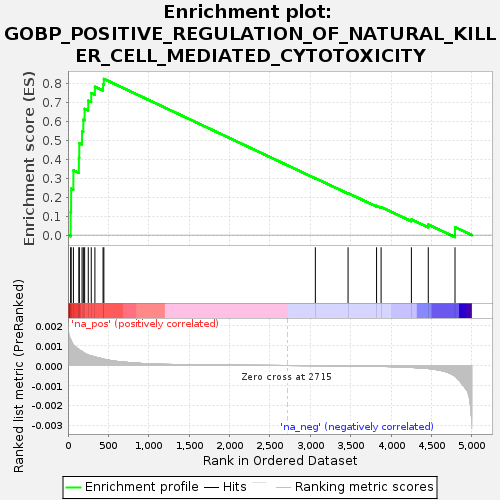
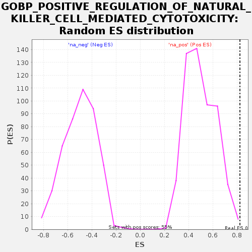

| Dataset | GEP2_vs_GEP6_residuals |
| Phenotype | NoPhenotypeAvailable |
| Upregulated in class | na_pos |
| GeneSet | GOBP_POSITIVE_REGULATION_OF_NATURAL_KILLER_CELL_MEDIATED_CYTOTOXICITY |
| Enrichment Score (ES) | 0.824585 |
| Normalized Enrichment Score (NES) | 1.6453995 |
| Nominal p-value | 0.0036166366 |
| FDR q-value | 0.15663803 |
| FWER p-Value | 0.79 |

| SYMBOL | RANK IN GENE LIST | RANK METRIC SCORE | RUNNING ES | CORE ENRICHMENT | |
|---|---|---|---|---|---|
| 1 | RASGRP1 | 33 | 0.001 | 0.1210 | Yes |
| 2 | KLRK1 | 39 | 0.001 | 0.2452 | Yes |
| 3 | SH2D1A | 67 | 0.001 | 0.3417 | Yes |
| 4 | KLRC4 | 135 | 0.001 | 0.4079 | Yes |
| 5 | CD226 | 140 | 0.001 | 0.4845 | Yes |
| 6 | KLRD1 | 174 | 0.001 | 0.5477 | Yes |
| 7 | LAG3 | 190 | 0.001 | 0.6089 | Yes |
| 8 | IL18RAP | 206 | 0.001 | 0.6666 | Yes |
| 9 | KLRC3 | 251 | 0.001 | 0.7097 | Yes |
| 10 | SLAMF6 | 288 | 0.000 | 0.7498 | Yes |
| 11 | CRTAM | 333 | 0.000 | 0.7832 | Yes |
| 12 | KLRC1 | 434 | 0.000 | 0.7954 | Yes |
| 13 | CD160 | 444 | 0.000 | 0.8246 | Yes |
| 14 | RAET1E | 3062 | -0.000 | 0.3000 | No |
| 15 | IL12B | 3467 | -0.000 | 0.2211 | No |
| 16 | PVR | 3820 | -0.000 | 0.1545 | No |
| 17 | CADM1 | 3876 | -0.000 | 0.1480 | No |
| 18 | VAV1 | 4251 | -0.000 | 0.0824 | No |
| 19 | IL12A | 4460 | -0.000 | 0.0556 | No |
| 20 | NCR3 | 4791 | -0.001 | 0.0418 | No |
